Choosing a summarisation method
Tom Smith
2026-09-11
Source:vignettes/summarisation_methods.Rmd
summarisation_methods.RmdSummarising lower-level quantification (PSMs for TMT, peptides for
LFQ) to protein-level abundance can be done with sum,
median or MsCoreUtils::robustSummary, and the
choice changes both which proteins are quantified and what their
abundance profiles look like. (mean is not considered
separately: it’s just sum divided by the number of
contributing features, so it produces the same abundance profile across
samples as sum, only rescaled.) These are general
considerations for bottom-up proteomics, independent of the
quantification technology: the same weighting and missing-value
behaviours apply whether the lower-level features are PSMs or peptides.
The methods differ in two distinct ways, and the two are easy to run
together, so they are separated here across three datasets — two from
the TMT QC vignette and one
from the LFQ-DDA QC
vignette:
-
How the methods weight individual features. Even
with complete data,
sumandrobustSummary/medianproduce different protein-level estimates, because they do not treat the underlying features equally. Part 1 isolates this usingtmt_qf, the whole-proteome TMT PD dataset, which has very little missingness for it to be confounded with. -
How the methods handle missing values.
sumrequires complete data, whereasrobustSummarycan use features with some missing values. Part 2 takes this up withtmt_qf_mq, the TMT MaxQuant IP dataset, where missingness is common and potentially informative; Part 3 repeats it withlfq_qf, an LFQ-DDA whole-proteome dataset, to establish that the conclusion is about missingness rather than about TMT.
Part 1: How the methods weight individual PSMs
tmt_qf already contains protein-level quantification
from a simple sum summarisation (protein),
with missing values and single-PSM proteins removed.
robustSummary and median are computed below
from the same starting point, so that any difference between the three
is attributable to the estimator.
Summarisation with robustSummary
robustSummary handles missing values within the
algorithm, so PSMs carrying some do not have to be discarded. PSMs
missing from most channels still contribute little beyond noise, so a
threshold is applied anyway — here, PSMs missing from at most half the
channels.
tmt_qf[['psms_filtered_forRobust']] <- QFeatures::filterNA(
tmt_qf[['psms_filtered_rank']], 5/10)PSMs belonging to proteins with fewer than 2 PSMs are then removed.
min_psms <- 2
tmt_qf[['psms_filtered_forRobust']] <- biomasslmb::filter_features_per_protein(
tmt_qf[['psms_filtered_forRobust']], min_features = min_psms)robustSummary assumes approximately Gaussian
quantification values, so they are log transformed.
tmt_qf[['psms_filtered_forRobust']] <- QFeatures::logTransform(
tmt_qf[['psms_filtered_forRobust']], base=2)Summarising with robustSummary:
# Aggregate to protein-level abundances (using QFeatures function)
tmt_qf <- QFeatures::aggregateFeatures(tmt_qf,
i = "psms_filtered_forRobust",
fcol = "Master.Protein.Accessions",
name = "protein_robust",
fun = MsCoreUtils::robustSummary,
maxit=1000)
#> Your quantitative and row data contain missing values. Please read the
#> relevant section(s) in the aggregateFeatures manual page regarding the
#> effects of missing values on data aggregation.
#> Aggregated: 1/1Summarisation with median
median is included because it is a typical way to
summarise across observations, and because it makes the behaviour of the
other two easier to read — not because it is recommended, for reasons
the rest of Part 1 sets out. It is given the PSMs with missing values
already filtered out. median would accept them with
na.rm=TRUE, but silently taking the median of whichever
PSMs happen to be present computes a different quantity in each
sample.
tmt_qf <- QFeatures::aggregateFeatures(tmt_qf,
i = "psms_filtered_forSum",
fcol = "Master.Protein.Accessions",
name = "protein_median",
fun = matrixStats::colMedians, na.rm=TRUE)
#> Your row data contain missing values. Please read the relevant
#> section(s) in the aggregateFeatures manual page regarding the effects
#> of missing values on data aggregation.
#> Aggregated: 1/1
tmt_qf[['protein_median']] <- QFeatures::logTransform(
tmt_qf[['protein_median']], base=2)Comparing the summarisation approaches
As established in the QC vignette, this dataset has very few missing
values to begin with, so tolerating missing PSMs gains
robustSummary no proteins here. That is what makes it the
right dataset for the first question: with the missing-value advantage
held at zero, any disagreement between the methods is about how they
weight features. Part 2 takes the missing-value question to a dataset
that has some.
# Single object with protein inference from both methods
compare_protein_abundances <- qfeatures_long(
tmt_qf[,,c('protein', 'protein_robust', 'protein_median')]) %>%
data.frame() %>%
mutate(method=recode_values(
assay,
'protein'~'Sum',
'protein_robust'~'Robust',
'protein_median'~'Median'))
#> Warning: 'experiments' dropped; see 'drops()'
#> harmonizing input:
#> removing 96 sampleMap rows not in names(experiments)The proteins where the methods disagree most are the informative ones to look at, and a disagreement between three methods has three shapes: any one of them can be the odd one out while the other two agree. One protein is taken for each shape — the protein where that method departs furthest from the other two, scored as the correlation between the other two minus the better of the departing method’s own two correlations.
The comparison is restricted to proteins where all three methods
summarise an identical set of PSMs. robustSummary accepts
PSMs carrying missing values that sum and
median never see, and where it does, a departure would be a
difference in the features available to it rather than in the estimator
— that is Part 2’s subject, and it would confound this one.
psms_per_protein <- function(i) {
split(rownames(tmt_qf[[i]]),
rowData(tmt_qf[[i]])$Master.Protein.Accessions)
}
sum_psms <- psms_per_protein('psms_filtered_forSum')
robust_psms <- psms_per_protein('psms_filtered_forRobust')
same_psms <- Filter(function(protein) setequal(sum_psms[[protein]], robust_psms[[protein]]),
intersect(names(sum_psms), names(robust_psms)))
method_agreement <- compare_protein_abundances %>%
filter(rowname %in% same_psms) %>%
select(method, value, rowname, colname) %>%
pivot_wider(names_from = method, values_from = value) %>%
group_by(rowname) %>%
filter(!any(is.na(c(Sum, Robust, Median)))) %>%
summarise(sum_robust = cor(Sum, Robust),
sum_median = cor(Sum, Median),
robust_median = cor(Robust, Median)) %>%
mutate(Sum = robust_median - pmax(sum_robust, sum_median),
Robust = sum_median - pmax(sum_robust, robust_median),
Median = sum_robust - pmax(sum_median, robust_median))
proteins_of_interest <- sapply(
c(Sum = 'Sum', Robust = 'Robust', Median = 'Median'),
function(method) method_agreement$rowname[which.max(method_agreement[[method]])])
proteins_of_interest
#> Sum Robust Median
#> "Q9WU28" "A0A286YCX6" "Q99PJ0"A helper plots one protein twice: its PSM-level abundances on their original scale, and the protein-level abundance from each method normalised to mean abundance, so the three methods sit on a comparable scale.
plot_pep_and_protein <- function(protein_of_interest) {
to_plot_compare <- compare_protein_abundances %>%
filter(rowname == protein_of_interest) %>%
group_by(method) %>%
mutate(value = value - mean(value)) %>%
ungroup()
pep_plot <- QFeatures::filterFeatures(
tmt_qf,
VariableFilter("Master.Protein.Accessions",
protein_of_interest,
condition = "=="))[['psms_filtered_sn']] %>%
qfeatures_long() %>%
ggplot(aes(x = colname, y = log2(value))) +
geom_line(aes(group = rowname), colour = 'grey') +
geom_point(colour = 'grey') +
theme_biomasslmb(base_size = 15, border = FALSE, base_family = 'sans') +
theme(axis.text.x = element_text(angle = 45, vjust = 1, hjust = 1)) +
labs(
title = protein_of_interest,
x = '',
y = 'PSM abundance (log2)'
)
protein_plot <- to_plot_compare %>%
ggplot(aes(x = colname, y = value, colour = method, group = method)) +
geom_line() +
scale_colour_manual(values = get_cat_palette(3),
name = 'Protein summarisation method') +
theme_biomasslmb(base_size = 15, border = FALSE, base_family = 'sans') +
theme(axis.text.x = element_text(angle = 45, vjust = 1, hjust = 1)) +
labs(
title = protein_of_interest,
x = '',
y = 'Protein abundance (log2, mean-normalised)'
) +
guides(color = guide_legend(override.aes = list(linewidth = 2) ) )
list(peptide = pep_plot, protein = protein_plot)
}In the peptide-level plots below, each grey line is a single PSM’s abundance on its original scale. In the protein-level plots, each summarisation method’s abundance profile is mean-normalised, so the methods sit on a comparable scale and can be compared directly. The important thing to focus on is the abundance profile across the tags for any one summarisation method or PSM.
for(method in names(proteins_of_interest)) {
plots <- plot_pep_and_protein(proteins_of_interest[[method]])
print(plots$peptide + labs(subtitle = paste(method, 'departs')))
print(plots$protein + labs(subtitle = paste(method, 'departs')))
}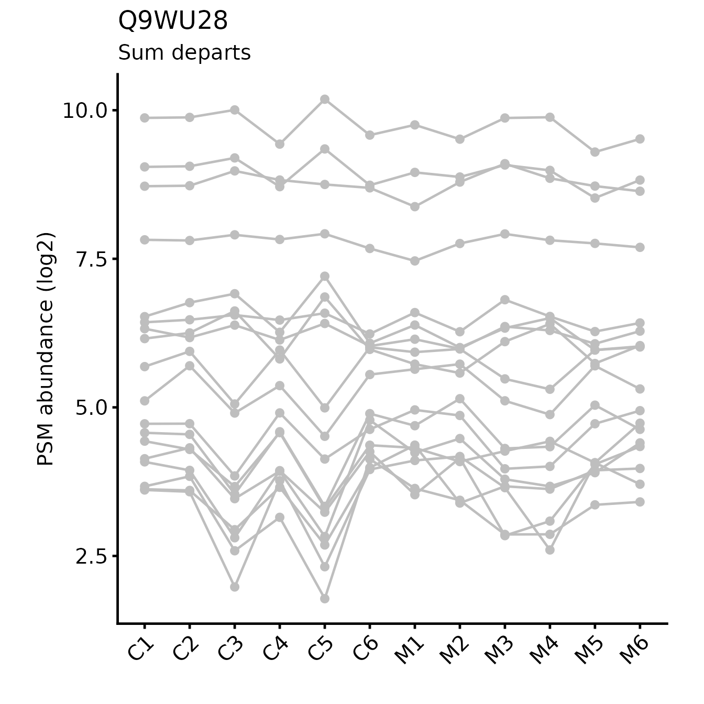
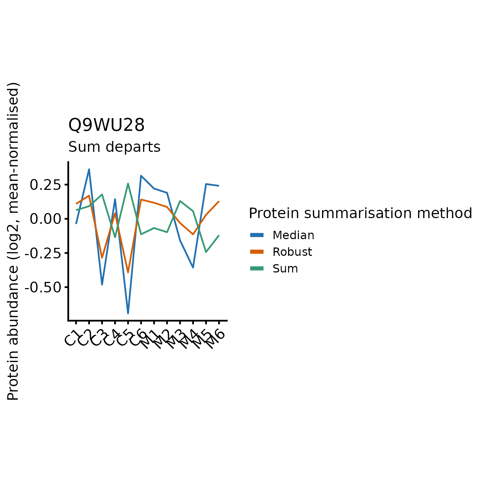
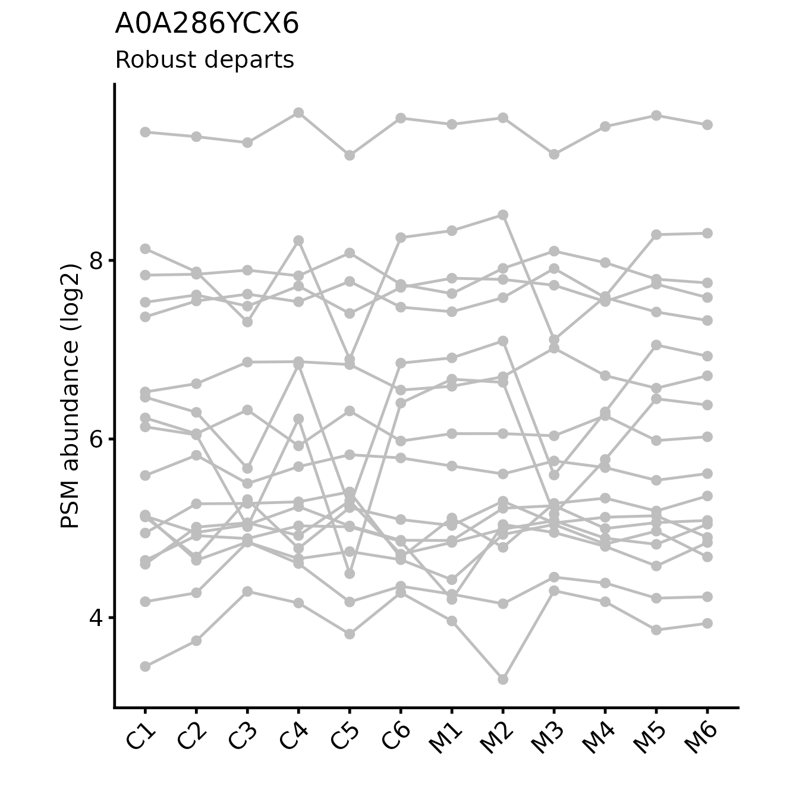
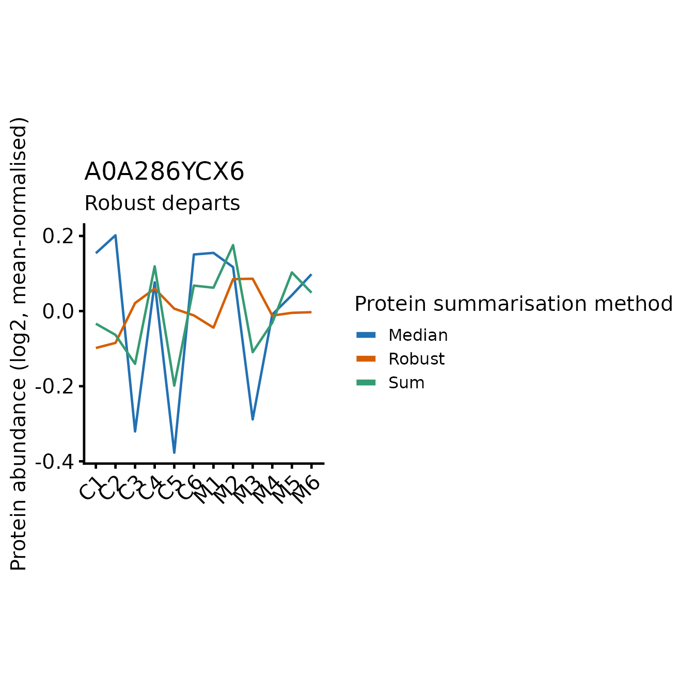
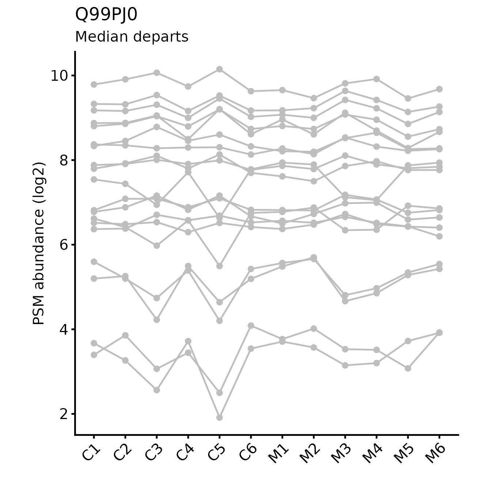
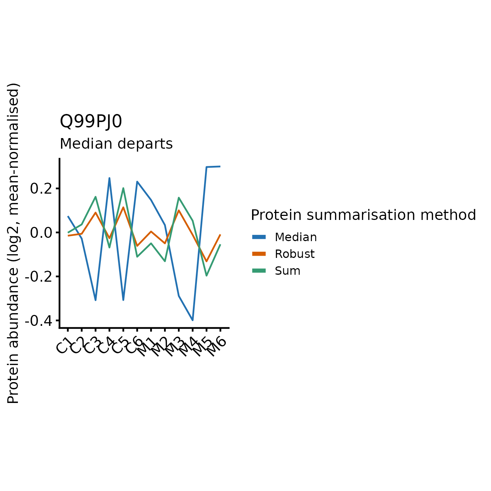
Two of the three are shapes of genuine conflict: for Q9WU28 and Q99PJ0, the departing method describes a different profile across most of the plex rather than a discrepancy at one or two tags.
robustSummary is seldom the method that
departs. The worst case for sum scores 1.62 on the
measure above and the worst case for median 1.69, while
across the 386 proteins compared here the worst case for
robustSummary reaches only 0.56. That worst case is milder
than its correlations suggest: the robustSummary profile
for A0A286YCX6 varies across the tags with a standard deviation of 0.06
against 0.21 for median, so the disagreement is between a
nearly flat profile and a structured one rather than between two
conflicting accounts of the protein.
Since sum simply adds together the abundance values
across the PSMs for a given tag and the abundance values may span
multiple orders of magnitude, the protein-level abundance pattern across
the tags is weighted towards the most abundant PSMs. This is likely to
be a positive attribute, since the most abundant PSMs will be more
accurately quantified. However, the summarisation is also sensitive to
high abundance outliers. robustSummary and
median, by contrast, ignore absolute abundance:
robustSummary weights each PSM by how far it sits from the
consensus profile, while median keeps only whichever PSMs
fall in the middle of the range.
This is visible directly for the protein where median
departs. Correlating each PSM’s abundance profile across the tags
against the sum-summarised protein profile gives a low or
negative value for any PSM that disagrees with the majority.
poi <- proteins_of_interest[['Median']]
rd <- rowData(tmt_qf[['psms_filtered_sn']])
psm_mask <- rd$Master.Protein.Accessions == poi
psm_values <- log2(assay(tmt_qf[['psms_filtered_sn']])[psm_mask, , drop = FALSE])
sum_profile <- assay(tmt_qf[['protein']])[poi, ]
psm_cors <- apply(psm_values, 1, function(x) cor(x, sum_profile, use = "complete.obs"))
sort(psm_cors)
#> 7405 8404 8504 7498 8570 7552 9283
#> -0.9134327 -0.8962110 -0.8405904 -0.8317057 -0.8237807 -0.5217825 0.5278807
#> 10524 6842 5315 5314 4172 6843 10521
#> 0.6475433 0.6520070 0.8087495 0.8165681 0.8699799 0.8865314 0.8909420
#> 9282 4284 10142 9280 10522
#> 0.8950271 0.9212267 0.9321681 0.9694289 0.9721052Colouring the same PSM traces by that correlation puts the disagreement and the abundance on one pair of axes.
psm_cor_long <- data.frame(psm_values, check.names = FALSE) %>%
mutate(rowname = rownames(psm_values),
correlation = psm_cors[rowname]) %>%
pivot_longer(cols = all_of(colnames(psm_values)),
names_to = 'colname', values_to = 'abundance')
psm_cor_long %>%
ggplot(aes(x = colname, y = abundance, group = rowname, colour = correlation)) +
geom_line(linewidth = 1.2) +
geom_point(size = 1.5) +
scale_colour_gradient2(low = get_cat_palette(2)[2], mid = 'grey80',
high = get_cat_palette(1), midpoint = 0,
limits = c(-1, 1),
name = 'Correlation with\nsum profile') +
theme_biomasslmb(base_size = 15, border = FALSE, base_family = 'sans') +
theme(axis.text.x = element_text(angle = 45, vjust = 1, hjust = 1)) +
labs(title = poi, x = '', y = 'PSM abundance (log2)')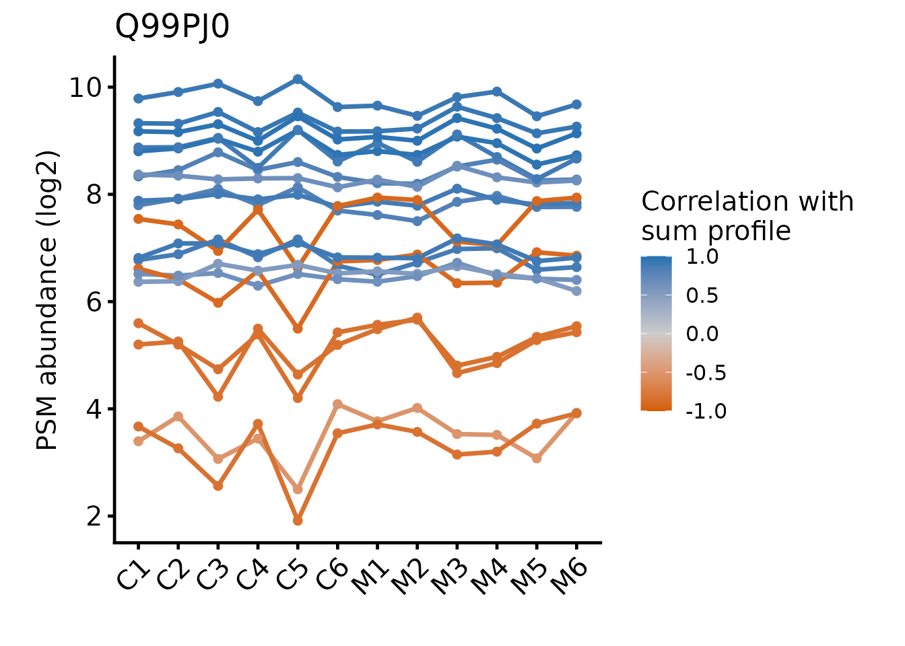
Disagreement concentrates in the faint PSMs, and the one that
matters is the exception. Agreement with the summed profile
rises with abundance — Spearman 0.79 between the two here — which is
what noise in the poorly quantified PSMs would look like, and it is the
case for weighting by intensity, since sum discounts those
automatically. The most strongly anticorrelated PSM is the one that
breaks the pattern: it ranks 10 of 19 by mean abundance and carries 3.9%
of the summed signal against the 5.3% an equal split would give it, so
sum neither discounts it for being dim nor lets it dominate
for being bright.
What a PSM in that position costs each method can be measured by dropping each PSM in turn and re-summarising from the rest.
summarise_psms <- function(ids, method) {
m <- 2^psm_values[ids, , drop = FALSE]
profile <- switch(method,
Sum = log2(colSums(m)),
Robust = MsCoreUtils::robustSummary(log2(m), maxit = 1000),
Median = log2(matrixStats::colMedians(m)))
profile - mean(profile)
}
loo_cor <- sapply(c(Sum = 'Sum', Robust = 'Robust', Median = 'Median'), function(method) {
full <- summarise_psms(rownames(psm_values), method)
sapply(rownames(psm_values), function(psm)
cor(full, summarise_psms(setdiff(rownames(psm_values), psm), method)))
})
# the largest and second-largest effect any single PSM has on each method
round(data.frame(worst = apply(loo_cor, 2, min),
next_worst = apply(loo_cor, 2, function(x) sort(x)[2])), 3)
#> worst next_worst
#> Sum 0.987 0.994
#> Robust 0.955 0.957
#> Median -0.741 0.915One PSM out of 19 decides the median profile,
and none of them decides the other two. No single PSM moves
sum below a correlation of 0.987 with its original profile,
or robustSummary below 0.955. median survives
the loss of any PSM equally well — down to 0.92 — except one, whose
removal takes it to -0.74, inverting the profile. That PSM ranks 10 of
19 by abundance: median reads the middle of the range and
nothing else, so whichever PSM sits there controls the result, and here
that PSM disagrees with the rest. sum gives it only the
weight its intensity earns and robustSummary discounts it
further for sitting away from the consensus, which is why the two of
them track each other at 0.95 for this protein while median
sits at -0.85 against sum.
The median is less sensitive to a bright outlier than the mean, but ignores much of the quantitative data since it’s only affected by the ‘middle’ PSMs. In the most extreme instances, median just simplifies the PSM level abundances down to a single representative ‘middle’ PSM. That instability is a general property of the estimator rather than a quirk of this protein, and the next section measures it across the dataset.
Why the median is the least stable summarisation
In the profiles above, the median line moves around more
than the other two. This is a general property rather than a feature of
these particular proteins, and it can be measured. Because
median and sum are both computed here from the
same PSMs (psms_filtered_forSum), any difference between
them is down to the estimator alone.
The proteins in this dataset genuinely differ between
Control and Mutant, so the spread of a profile
across all twelve tags mixes real signal with noise. What is noise, and
only noise, is how much an estimate moves between replicates of the
same condition.
psm_counts <- table(
rowData(tmt_qf[['psms_filtered_forSum']])$Master.Protein.Accessions)
condition <- colData(tmt_qf)$Condition
replicate_sd <- function(x) {
sqrt(mean(tapply(seq_along(condition), condition, function(i) var(x[i]))))
}
methods <- c(Sum = 'protein', Robust = 'protein_robust', Median = 'protein_median')
shared <- Reduce(intersect, lapply(methods, function(a) rownames(tmt_qf[[a]])))
shared <- shared[Reduce(`&`, lapply(methods, function(a)
complete.cases(assay(tmt_qf[[a]])[shared, ])))]
stability <- data.frame(
sapply(methods, function(a) apply(assay(tmt_qf[[a]])[shared, ], 1, replicate_sd)),
n_psm = as.integer(psm_counts[shared]))
stability %>%
mutate(psms = cut(n_psm, c(1, 2, 3, 5, 9, Inf),
labels = c('2', '3', '4-5', '6-9', '10 or more'))) %>%
group_by(psms) %>%
summarise(proteins = n(),
across(c(Sum, Robust, Median), ~ round(median(.x), 3)))
#> # A tibble: 5 × 5
#> psms proteins Sum Robust Median
#> <fct> <int> <dbl> <dbl> <dbl>
#> 1 2 62 0.146 0.151 0.146
#> 2 3 36 0.139 0.143 0.186
#> 3 4-5 67 0.124 0.126 0.15
#> 4 6-9 90 0.107 0.104 0.149
#> 5 10 or more 147 0.108 0.1 0.13Two things stand out. With exactly 2 PSMs all three methods are
equally stable, and sum and median are in fact
identical: the median of two values is their mean, which is the sum
divided by two, and dividing by a constant is an offset on the log scale
that a profile cannot see. From 3 PSMs upwards median is
the noisiest, typically by around 22%, and the gap widens as PSMs
accumulate: sum and robustSummary become
steadily more precise, while median improves very
little.
That is the explanation in full. sum and
robustSummary combine every PSM; median
reports one of them. Averaging several measurements of the same
quantity cancels part of the error in each, so the more PSMs a protein
has, the better those two estimates get. Taking the middle value does
not average anything, so the protein estimate carries a single PSM’s
worth of noise however many PSMs were available. Even when everything is
well behaved this costs about a fifth more variability — the standard
penalty for using a median in place of a mean.
The bigger cost is that rank position says nothing about how well a
PSM was measured, so median has no protection against
landing on a badly measured one, and when it does the protein inherits
that PSM’s noise in full. For 49 of the 340 proteins with 3 or more
PSMs, median is more than twice as noisy as
sum. sum avoids this without doing anything
clever, because weighting PSMs by their absolute intensity is close to
weighting them by their precision:
psm_quant <- log2(assay(tmt_qf[['psms_filtered_forSum']]))
data.frame(intensity = rowMeans(psm_quant),
noise = apply(psm_quant, 1, replicate_sd)) %>%
mutate(quartile = cut(intensity, quantile(intensity), include.lowest = TRUE,
labels = paste0('Q', 1:4))) %>%
group_by(quartile) %>%
summarise(psms = n(), noise = round(median(noise), 3))
#> # A tibble: 4 × 3
#> quartile psms noise
#> <fct> <int> <dbl>
#> 1 Q1 1214 0.257
#> 2 Q2 1213 0.184
#> 3 Q3 1213 0.167
#> 4 Q4 1213 0.164The most intense PSMs are the most reproducibly quantified, so
sum leans on them automatically. median
weights by rank instead, which is uninformative about quality.
A smaller contribution is that the PSM occupying the middle need not be the same one in every tag. Since the PSMs of a single protein sit at different absolute intensities, every switch moves the estimate to a different baseline:
poi_odd <- proteins_of_interest[
as.integer(psm_counts[proteins_of_interest]) %% 2 == 1][1]
poi_psms <- log2(assay(tmt_qf[['psms_filtered_forSum']])[
rowData(tmt_qf[['psms_filtered_forSum']])$Master.Protein.Accessions == poi_odd, ])
middle_psm <- apply(poi_psms, 2, function(x) rownames(poi_psms)[order(x)[(length(x) + 1) / 2]])
round(sort(rowMeans(poi_psms)[unique(middle_psm)]), 2)
#> 4172 9282 7405 5315
#> 6.83 6.94 7.49 7.83Q99PJ0 has 19 PSMs, and 4 different ones take a turn in the middle across the twelve tags, at mean intensities spanning a 2-fold range. Each handover puts a step into the profile that is not an abundance change, which is why these profiles look jagged rather than merely noisy.
robustSummary avoids all of this while keeping its
resistance to outliers, because it does not summarise each sample
separately. It fits one linear model across the whole PSM-by-sample
matrix, with a term for every PSM and a term for every sample, by
iteratively reweighted least squares, and returns the sample terms.
Discordant observations are down-weighted rather than discarded, so
every PSM informs every sample’s estimate; and each PSM’s own intensity
is absorbed into its own term, so it cannot leak into the between-sample
profile. Resistance to outliers comes from the weights rather than from
ignoring all but the middle value, which is why it matches
sum for stability in the table above while remaining, as
the disagreeing PSM earlier showed, far less sensitive to any one
PSM.
This is why median is included here for interpretation
rather than recommended: it shows what happens when a summarisation
discards quantitative information, and the cost begins as soon as a
protein has more than two PSMs.
Part 2: How the methods handle missing values
Part 2 switches to tmt_qf_mq, the MaxQuant IP dataset
from the enrichment designs
vignette. Missing values here are common and potentially informative — a
protein absent from the control pulldown is genuinely absent rather than
undetected by chance — which is exactly the condition under which the
two methods can be expected to diverge.
tmt_qf_mq[['psms_filtered_interference']] (the PSMs used
for summarisation in that vignette) is stored on the log2 scale, since
that is what robustSummary requires. A sum
comparison needs the values back on their original scale.
tmt_qf_mq[['psms_filtered_interference_raw']] <- tmt_qf_mq[['psms_filtered_interference']]
assay(tmt_qf_mq[['psms_filtered_interference_raw']]) <- 2^assay(tmt_qf_mq[['psms_filtered_interference_raw']])A fair comparison needs the same rule applied to both approaches, so
both keep only proteins with at least 2 retained PSMs. They differ in
one respect alone: how much missingness a PSM may carry before it is
discarded — none for sum, up to 8/12 for
robustSummary, the same threshold used in the QC
vignette.
tmt_qf_mq[['psms_filtered_forSum_mq']] <- QFeatures::filterNA(
tmt_qf_mq[['psms_filtered_interference_raw']], 0)
tmt_qf_mq[['psms_filtered_forSum_mq']] <- biomasslmb::filter_features_per_protein(
tmt_qf_mq[['psms_filtered_forSum_mq']], min_features = min_psms,
master_protein_col = 'Leading.razor.protein')
tmt_qf_mq[['psms_filtered_forRobust_mq']] <- QFeatures::filterNA(
tmt_qf_mq[['psms_filtered_interference']], 8/12)
tmt_qf_mq[['psms_filtered_forRobust_mq']] <- biomasslmb::filter_features_per_protein(
tmt_qf_mq[['psms_filtered_forRobust_mq']], min_features = min_psms,
master_protein_col = 'Leading.razor.protein')Both are then summarised to protein level.
tmt_qf_mq <- QFeatures::aggregateFeatures(
tmt_qf_mq, i = 'psms_filtered_forSum_mq', fcol = 'Leading.razor.protein',
name = 'protein_mq_sum', fun = base::colSums)
#> Your row data contain missing values. Please read the relevant
#> section(s) in the aggregateFeatures manual page regarding the effects
#> of missing values on data aggregation.
#> Aggregated: 1/1
tmt_qf_mq[['protein_mq_sum']] <- QFeatures::logTransform(tmt_qf_mq[['protein_mq_sum']], base = 2)
tmt_qf_mq <- QFeatures::aggregateFeatures(
tmt_qf_mq, i = 'psms_filtered_forRobust_mq', fcol = 'Leading.razor.protein',
name = 'protein_mq_robust', fun = MsCoreUtils::robustSummary, maxit = 1000)
#> Your quantitative and row data contain missing values. Please read the
#> relevant section(s) in the aggregateFeatures manual page regarding the
#> effects of missing values on data aggregation.
#> Aggregated: 1/1
n_sum <- nrow(tmt_qf_mq[['protein_mq_sum']])
n_robust <- nrow(tmt_qf_mq[['protein_mq_robust']])
data.frame(method = factor(c('Sum', 'Robust'), levels = c('Sum', 'Robust')),
n_proteins = c(n_sum, n_robust)) %>%
ggplot(aes(method, n_proteins, fill = method)) +
geom_col(width = 0.6) +
geom_text(aes(label = n_proteins), vjust = -0.5) +
scale_y_continuous(expand = expansion(mult = c(0, 0.1))) +
scale_fill_manual(values = get_cat_palette(2), guide = 'none') +
theme_biomasslmb(border = FALSE) +
ylab('Proteins quantified') + xlab('')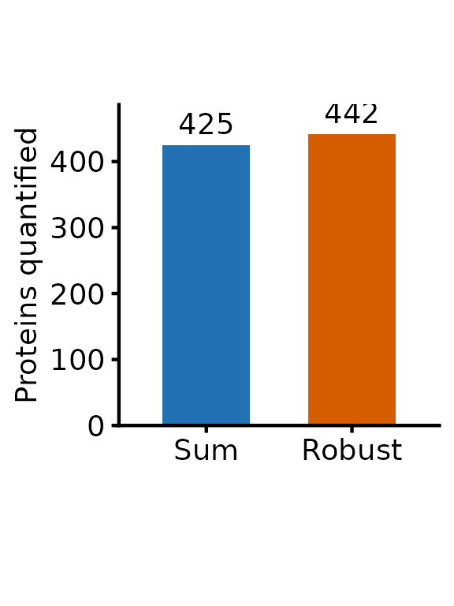
Tolerating incomplete PSMs is worth 17 proteins here
— 442 against 425 for sum. The proteins quantified only via
robustSummary are the ones to examine, since they show what
the completeness requirement actually costs.
sum_proteins_mq <- rownames(tmt_qf_mq[['protein_mq_sum']])
robust_proteins_mq <- rownames(QFeatures::filterNA(tmt_qf_mq[['protein_mq_robust']]))
rescued_proteins <- setdiff(robust_proteins_mq, sum_proteins_mq)
length(rescued_proteins)
#> [1] 16The mechanism is clearest in one of these 16 proteins with exactly 2 retained PSMs — the minimum allowed — where at least one PSM has missing values.
rd_mq <- rowData(tmt_qf_mq[['psms_filtered_forRobust_mq']])
mat_mq <- assay(tmt_qf_mq[['psms_filtered_forRobust_mq']])
example_protein <- rescued_proteins[vapply(rescued_proteins, function(p) {
psm_rows <- which(rd_mq$Leading.razor.protein == p)
length(psm_rows) == 2 && any(is.na(mat_mq[psm_rows, ]))
}, logical(1))][2]
retain_psms <- rd_mq$Leading.razor.protein == example_protein
round(2^mat_mq[retain_psms, ], 1)
#> IP_1 Control_4 IP_5 Control_1 IP_4 Control_3 Control_6 IP_2 Control_2
#> 15 1244.1 NA 599.2 NA 39.2 138.9 1480.7 76.8 54.0
#> 1457 5569.0 487 3091.5 231.1 85.0 1195.5 6363.2 508.2 185.4
#> IP_3 Control_5 IP_6
#> 15 NA 159.6 NA
#> 1457 408.4 703.2 346One PSM is missing in most samples, while the other is complete. With
sum, the incomplete PSM fails the zero-missing-values
filter and is discarded, leaving only 1 PSM for this protein — below the
minimum of 2, so the protein is dropped entirely. With
robustSummary, both PSMs are retained (the incomplete one
has few enough missing values to pass the 8/12 threshold), giving 2 PSMs
to summarise from and allowing the protein to be quantified.
Plotted the same way as Part 1 — PSM-level abundances in grey,
summarised protein-level abundance overlaid in colour. Only the
robustSummary line appears, because sum has no
value at all for this protein.
compare_protein_abundances_mq <- qfeatures_long(
tmt_qf_mq[,,c('protein_mq_sum', 'protein_mq_robust')]) %>%
data.frame() %>%
mutate(method=recode_values(
assay,
'protein_mq_sum'~'Sum',
'protein_mq_robust'~'Robust'))
#> Warning: 'experiments' dropped; see 'drops()'
#> harmonizing input:
#> removing 96 sampleMap rows not in names(experiments)
plot_pep_and_protein_mq <- function(protein_of_interest) {
to_plot_compare <- compare_protein_abundances_mq %>%
filter(rowname == protein_of_interest)
QFeatures::filterFeatures(
tmt_qf_mq,
VariableFilter("Leading.razor.protein",
protein_of_interest,
condition = "=="))[['psms_filtered_forRobust_mq']] %>%
qfeatures_long() %>%
ggplot(aes(x = colname, y = value)) +
geom_line(aes(group = rowname), colour = 'grey') +
geom_point(colour = 'grey') +
geom_line(data = to_plot_compare,
aes(x = colname, y = value, colour = method, group = method)) +
scale_colour_manual(values = get_cat_palette(4),
name = 'Protein summarisation method') +
theme_biomasslmb(base_size = 15, border = FALSE, base_family = 'sans') +
theme(axis.text.x = element_text(angle = 45, vjust = 1, hjust = 1)) +
labs(
title = protein_of_interest,
x = '',
y = 'PSM/Protein abundance (log2)'
)
}
plot_pep_and_protein_mq(example_protein)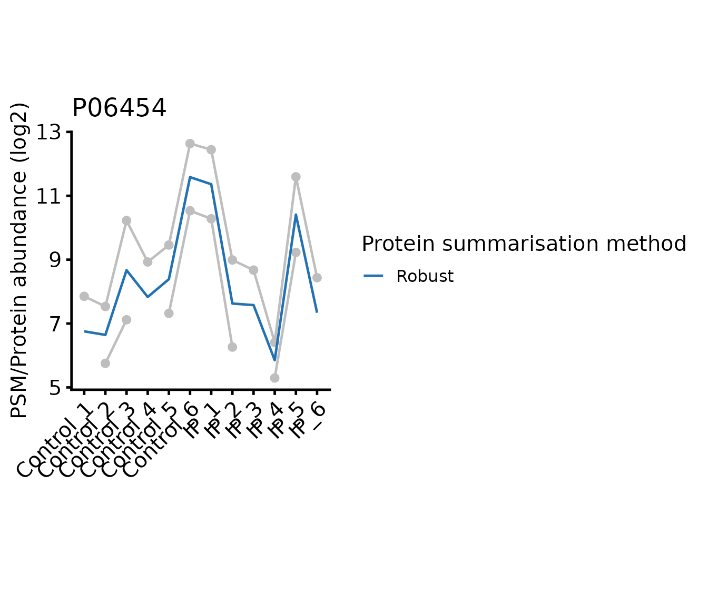
The two PSMs (grey) track each other where both are present, and the
robustSummary protein-level estimate (blue) follows
information presented from both PSMs.
Where both methods quantify a protein, but disagree
sum and robustSummary can also disagree on
proteins that both methods manage to quantify, simply because they draw
on different PSMs: sum requires complete PSMs, while
robustSummary also incorporates partially-missing ones.
P27695 is a good example: it has 3 PSMs retained by
robustSummary, only 2 of which are complete enough to be
used by sum.
example_protein_3psm <- 'P27695'
sum_mat <- assay(tmt_qf_mq[['protein_mq_sum']])
robust_mat <- assay(tmt_qf_mq[['protein_mq_robust']])
rd_mq2 <- rowData(tmt_qf_mq[['psms_filtered_forRobust_mq']])
mat_mq2 <- assay(tmt_qf_mq[['psms_filtered_forRobust_mq']])
psm_rows_2 <- rd_mq2$Leading.razor.protein == example_protein_3psm
round(2^mat_mq2[psm_rows_2, ], 1)
#> IP_1 Control_4 IP_5 Control_1 IP_4 Control_3 Control_6 IP_2
#> 1106 1215.9 2961.3 1611.3 2516.6 1258.1 2605.5 2286.6 2277.1
#> 2087 365.9 NA 659.5 143.2 429.6 132.0 124.9 1933.6
#> 2951 565.4 115.5 1919.1 114.6 700.6 218.5 193.8 3017.0
#> Control_2 IP_3 Control_5 IP_6
#> 1106 2492.6 1813.4 2509.2 1370.1
#> 2087 183.4 957.5 NA 701.1
#> 2951 85.0 1408.0 167.2 1144.0The third PSM is missing in exactly the two Control
channels (Control_4 and Control_5) -
consistent with genuinely low abundance in the control samples, rather
than a random dropout - so sum discards it and summarises
the protein from the other two, complete, PSMs alone.
robustSummary retains all three. Since sum
weights PSMs by their absolute abundance, its profile is dominated by
whichever of the two complete PSMs is more abundant, and here those two
PSMs disagree on the direction of the IP-vs-Control difference;
robustSummary also incorporates the partially-missing PSM,
which is clearly enriched in the IP samples. The two methods end up
describing quite different abundance profiles for the same protein
(correlation of 0.58 between them).
plot_pep_and_protein_mq(example_protein_3psm)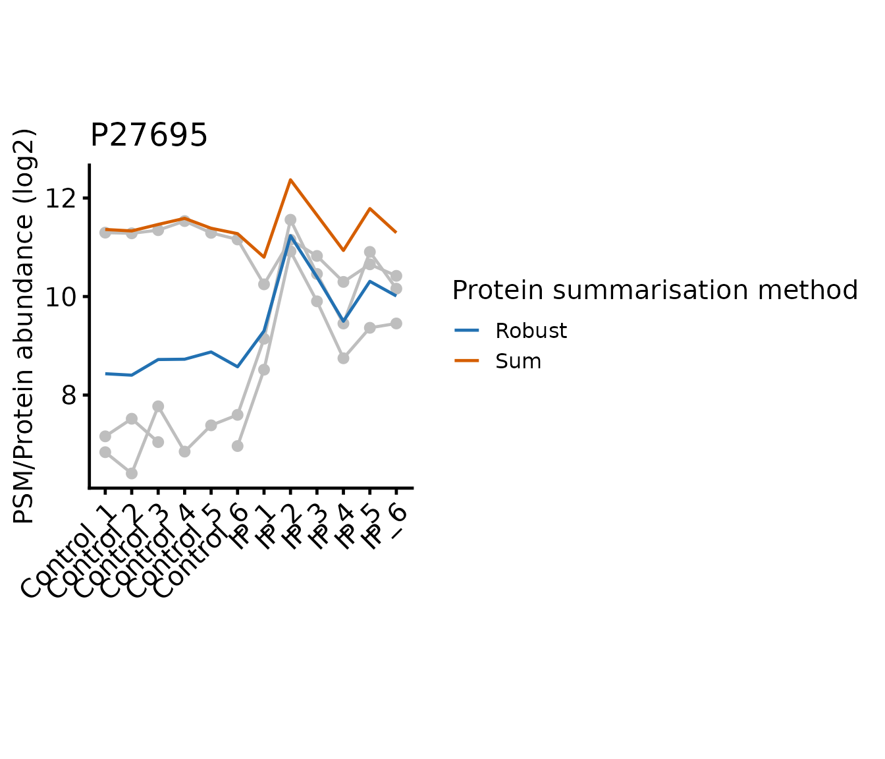
Comparing the Control and IP abundances for
each method puts the consequence in one plot.
condition_lookup <- setNames(tmt_per2_mq_design$Condition, rownames(tmt_per2_mq_design))
compare_protein_abundances_mq %>%
filter(rowname == example_protein_3psm) %>%
mutate(condition = condition_lookup[colname]) %>%
ggplot(aes(x = method, y = value, colour = condition)) +
geom_point(position = position_jitterdodge(jitter.width = 0.1, dodge.width = 0.5), size = 2) +
stat_summary(fun = mean, geom = 'crossbar', width = 0.4,
position = position_dodge(width = 0.5)) +
scale_colour_manual(values = get_cat_palette(2),
name = '') +
theme_biomasslmb(base_size = 15, border = FALSE, base_family = 'sans') +
labs(title = example_protein_3psm, x = '', y = 'Protein abundance (log2)')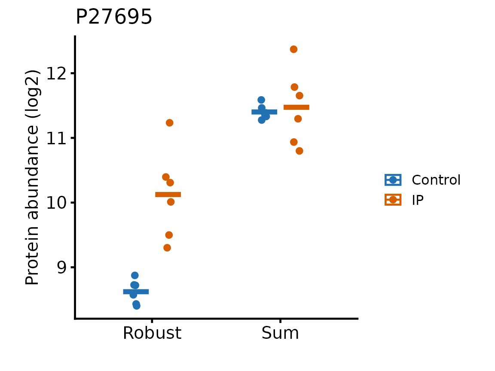
robustSummary separates IP from
Control here and sum largely does
not. sum is working from the two complete PSMs
alone, which disagree with each other on direction, so its estimate is
diluted. robustSummary also draws on the missing-value PSM
— the one PSM that is unambiguously enriched in the IP samples, and
unambiguously enriched for the same reason it goes undetected in two of
the Control channels. Discarding it as incomplete discards
the observation that carries the finding.
Part 3: The same missing-value trade-off with LFQ peptides
Parts 1 and 2 both used TMT PSMs as the lower-level feature, which
leaves open whether the Part 2 conclusion is about missingness or about
TMT. Repeating the same comparison on lfq_qf, the LFQ-DDA
whole-proteome dataset from the LFQ-DDA QC vignette,
settles it: there the lower-level feature is a peptide rather than a
PSM. Missingness here differs from Part 2 in kind as well as degree: it
is not concentrated in one condition, but it is pervasive, because every
sample was quantified in a separate run.
lfq_qf[['peptides_filtered_norm']] (the peptides used
for summarisation in the QC vignette) is stored on the log2 scale, since
that is what robustSummary requires. A sum
comparison needs the values back on their original scale.
lfq_qf[['peptides_filtered_forSum']] <- lfq_qf[['peptides_filtered_norm']]
assay(lfq_qf[['peptides_filtered_forSum']]) <- 2^assay(lfq_qf[['peptides_filtered_forSum']])As in Part 2, the same rule is applied to both approaches: keep only
proteins with at least 2 retained peptides. They differ again in one
respect alone — how much missingness a peptide may carry before it is
discarded, none for sum and up to 4/6 for
robustSummary, the same threshold used in the QC
vignette.
min_peps <- 2
lfq_qf[['peptides_filtered_forSum']] <- QFeatures::filterNA(
lfq_qf[['peptides_filtered_forSum']], 0)
lfq_qf[['peptides_filtered_forSum']] <- biomasslmb::filter_features_per_protein(
lfq_qf[['peptides_filtered_forSum']], min_features = min_peps)Both are then summarised to protein level.
lfq_qf[['peptides_for_summarisation']] is the same peptide
set (at most 4/6 missing, at least 2 peptides per protein) used for
robustSummary in the QC vignette.
lfq_qf <- QFeatures::aggregateFeatures(
lfq_qf, i = 'peptides_filtered_forSum', fcol = 'Master.Protein.Accessions',
name = 'protein_lfq_sum', fun = base::colSums)
#> Aggregated: 1/1
lfq_qf[['protein_lfq_sum']] <- QFeatures::logTransform(lfq_qf[['protein_lfq_sum']], base = 2)
set.seed(42)
lfq_qf <- QFeatures::aggregateFeatures(
lfq_qf, i = 'peptides_for_summarisation', fcol = 'Master.Protein.Accessions',
name = 'protein_lfq_robust', fun = MsCoreUtils::robustSummary, maxit = 10000)
#> Your quantitative data contain missing values. Please read the relevant
#> section(s) in the aggregateFeatures manual page regarding the effects
#> of missing values on data aggregation.
#> Aggregated: 1/1
n_sum_lfq <- nrow(lfq_qf[['protein_lfq_sum']])
n_robust_lfq <- nrow(QFeatures::filterNA(lfq_qf[['protein_lfq_robust']]))
data.frame(method = factor(c('Sum', 'Robust'), levels = c('Sum', 'Robust')),
n_proteins = c(n_sum_lfq, n_robust_lfq)) %>%
ggplot(aes(method, n_proteins, fill = method)) +
geom_col(width = 0.6) +
geom_text(aes(label = n_proteins), vjust = -0.5) +
scale_y_continuous(expand = expansion(mult = c(0, 0.1))) +
scale_fill_manual(values = get_cat_palette(2), guide = 'none') +
theme_biomasslmb(border = FALSE) +
ylab('Proteins quantified') + xlab('')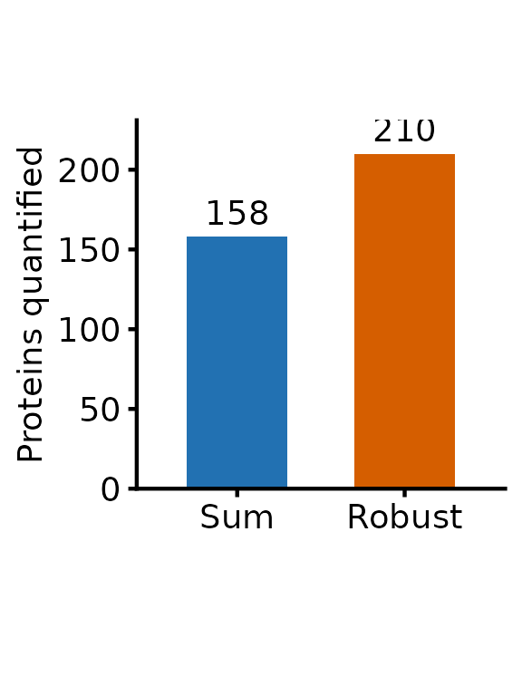
The same trade appears with peptides. Tolerating
incomplete peptides is worth 52 proteins here — 210 against 158 for
sum. The proteins quantified only via
robustSummary, and the peptides behind one of them:
sum_proteins_lfq <- rownames(lfq_qf[['protein_lfq_sum']])
robust_proteins_lfq <- rownames(QFeatures::filterNA(lfq_qf[['protein_lfq_robust']]))
rescued_proteins_lfq <- setdiff(robust_proteins_lfq, sum_proteins_lfq)
length(rescued_proteins_lfq)
#> [1] 52
rd_lfq <- rowData(lfq_qf[['peptides_for_summarisation']])
mat_lfq <- assay(lfq_qf[['peptides_for_summarisation']])
example_protein_lfq <- rescued_proteins_lfq[vapply(rescued_proteins_lfq, function(p) {
pep_rows <- which(rd_lfq$Master.Protein.Accessions == p)
length(pep_rows) == 2 && any(is.na(mat_lfq[pep_rows, ]))
}, logical(1))][1]
retain_peps_lfq <- rd_lfq$Master.Protein.Accessions == example_protein_lfq
round(2^mat_lfq[retain_peps_lfq, ], 1)
#> WT_1 WT_2 WT_3 Mutant_1 Mutant_2 Mutant_3
#> 3033 25583.3 NA NA 36333.4 20889.1 43536.7
#> 3460 6444.1 10246.4 6628 13522.1 12884.5 27020.1One peptide is missing in every Control replicate, while
the other is complete. With sum, the incomplete peptide
fails the zero-missing-values filter and is discarded, leaving only 1
peptide for this protein — below the minimum of 2, so the protein is
dropped entirely. With robustSummary, both peptides are
retained (the incomplete one has few enough missing values to pass the
4/6 threshold), giving 2 peptides to summarise from and allowing the
protein to be quantified - exactly the same mechanism as the TMT example
above, just with peptides in place of PSMs.
compare_protein_abundances_lfq <- qfeatures_long(
lfq_qf[,,c('protein_lfq_sum', 'protein_lfq_robust')]) %>%
data.frame() %>%
mutate(method=recode_values(
assay,
'protein_lfq_sum'~'Sum',
'protein_lfq_robust'~'Robust'))
#> Warning: 'experiments' dropped; see 'drops()'
#> harmonizing input:
#> removing 42 sampleMap rows not in names(experiments)
plot_pep_and_protein_lfq <- function(protein_of_interest) {
to_plot_compare <- compare_protein_abundances_lfq %>%
filter(rowname == protein_of_interest)
QFeatures::filterFeatures(
lfq_qf,
VariableFilter("Master.Protein.Accessions",
protein_of_interest,
condition = "=="))[['peptides_for_summarisation']] %>%
qfeatures_long() %>%
ggplot(aes(x = colname, y = value)) +
geom_line(aes(group = rowname), colour = 'grey') +
geom_point(colour = 'grey') +
geom_line(data = to_plot_compare,
aes(x = colname, y = value, colour = method, group = method)) +
scale_colour_manual(values = get_cat_palette(4),
name = 'Protein summarisation method') +
theme_biomasslmb(base_size = 15, border = FALSE, base_family = 'sans') +
theme(axis.text.x = element_text(angle = 45, vjust = 1, hjust = 1)) +
labs(
title = protein_of_interest,
x = '',
y = 'Peptide/Protein abundance (log2)'
)
}
plot_pep_and_protein_lfq(example_protein_lfq)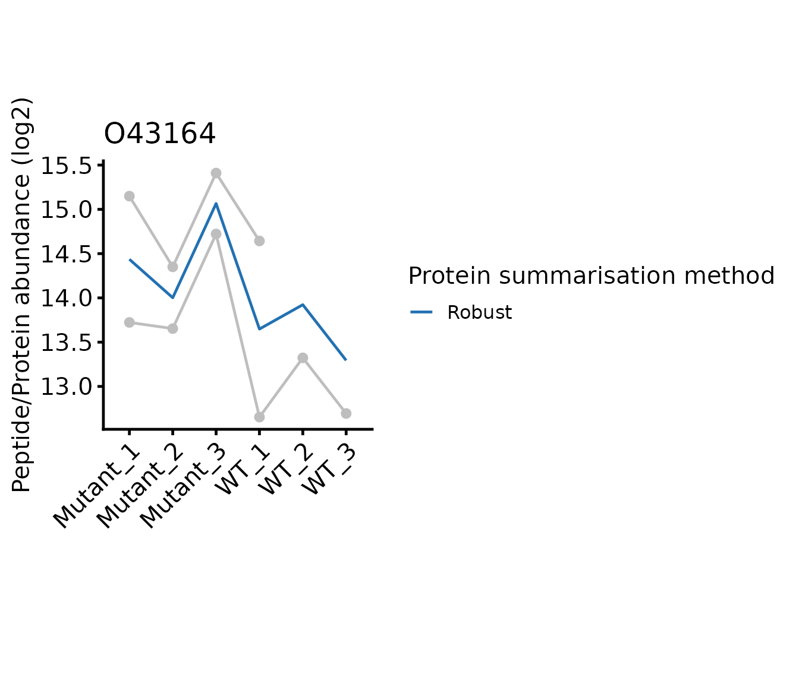
One of the two peptides is quantified in every sample; the other is
missing from two of the wild type replicates. sum needs
complete peptides, so discarding the incomplete one leaves the protein
with a single peptide, below the two-peptide requirement, and it drops
out entirely. robustSummary uses both peptides and
estimates the protein in all six samples, with the partially-observed
peptide contributing where it was measured.
both_proteins_lfq <- intersect(sum_proteins_lfq, robust_proteins_lfq)
cors_lfq <- sapply(both_proteins_lfq, function(p) {
cor(assay(lfq_qf[['protein_lfq_sum']])[p, ], assay(lfq_qf[['protein_lfq_robust']])[p, ])
})
summary(cors_lfq)
#> Min. 1st Qu. Median Mean 3rd Qu. Max.
#> 0.4927 0.9135 0.9736 0.9321 0.9934 1.0000Where both methods do manage to quantify a protein here, most agree well, but a meaningful minority do not: 32 of the 158 jointly-quantified proteins correlate below 0.9, and the lowest is 0.49. That is the Part 1 effect - the methods weight the underlying features differently - showing up alongside the Part 2 effect rather than instead of it, and it is more visible here than in the TMT data because LFQ peptide intensities for one protein span a wider range.
Both effects are larger with LFQ peptides than with TMT PSMs, but the rescuing of otherwise-discarded proteins (210 vs 158) remains the dominant one, consistent with LFQ carrying more missing values to begin with.
Summary
sum and mean weight the highest intensity
features most heavily, which are usually the most accurately quantified
— and are also where a high-abundance outlier does the most damage.
robustSummary treats features more equally regardless of
abundance, which costs it some of that automatic weighting towards
precision but lets it use features that are partly missing, and so
quantify proteins sum has to discard. median
gives up more than either, for the reasons in Part 1.
These are properties of the estimators rather than of any one quantification technology: Part 3 reproduced the Part 2 trade-off with LFQ peptides in place of TMT PSMs, and more strongly, since LFQ carries more missing values to begin with.
Which one to use follows from how much missingness there is,
not from a preference. Where missingness is very low, as in
Part 1, sum is the better choice: tolerating missing
features buys nothing when there are almost none, and complete data is
simpler to reason about downstream. Where missing values are common —
informative, as in the Part 2 IP dataset, or merely pervasive, as in the
Part 3 LFQ-DDA dataset — robustSummary is the better
choice, because it recovers proteins sum would discard and
uses more of the lower-level quantification that was actually measured.
Measuring the missingness before choosing is the point; handling missing values covers
how.
Where to go next
-
Handling missing values
is the article this one defers to. Summarisation is one of four stages
that make a decision about missing values, and choosing
robustSummaryhere interacts with what is done at the other three. - The core workflow articles apply the choice made here: TMT sums PSMs within a plex, LFQ-DDA and LFQ-DIA use
robustSummary, and each says what the dataset’s missingness rate had to look like for that to be right. - Both estimators assume the features they are given belong to the protein they are labelled with. Peptides are not proteins measures how often that assumption fails.
- Data exploration and statistical testing takes the protein-level abundances onward, whichever estimator produced them.
Getting help
If your experiment does not fit what this article assumes, or a result looks wrong, please get in touch with Tom Smith (tsmith@mrclmb.ac.uk) rather than guessing — it is far easier to help while an analysis is in progress than to unpick a decision afterwards, and easier still before the samples are run. Getting started sets out which article applies to which experiment.
sessionInfo()
#> R version 4.5.3 (2026-03-11)
#> Platform: x86_64-pc-linux-gnu
#> Running under: Ubuntu 24.04.5 LTS
#>
#> Matrix products: default
#> BLAS: /usr/lib/x86_64-linux-gnu/openblas-pthread/libblas.so.3
#> LAPACK: /usr/lib/x86_64-linux-gnu/openblas-pthread/libopenblasp-r0.3.26.so; LAPACK version 3.12.0
#>
#> locale:
#> [1] LC_CTYPE=C.UTF-8 LC_NUMERIC=C LC_TIME=C.UTF-8
#> [4] LC_COLLATE=C.UTF-8 LC_MONETARY=C.UTF-8 LC_MESSAGES=C.UTF-8
#> [7] LC_PAPER=C.UTF-8 LC_NAME=C LC_ADDRESS=C
#> [10] LC_TELEPHONE=C LC_MEASUREMENT=C.UTF-8 LC_IDENTIFICATION=C
#>
#> time zone: UTC
#> tzcode source: system (glibc)
#>
#> attached base packages:
#> [1] stats4 stats graphics grDevices utils datasets methods
#> [8] base
#>
#> other attached packages:
#> [1] dplyr_1.2.1 tidyr_1.3.2
#> [3] ggplot2_4.0.3 biomasslmb_0.1.0
#> [5] QFeatures_1.20.0 MultiAssayExperiment_1.36.2
#> [7] SummarizedExperiment_1.40.0 Biobase_2.70.0
#> [9] GenomicRanges_1.62.1 Seqinfo_1.0.0
#> [11] IRanges_2.44.0 S4Vectors_0.48.1
#> [13] BiocGenerics_0.56.0 generics_0.1.4
#> [15] MatrixGenerics_1.22.0 matrixStats_1.5.0
#>
#> loaded via a namespace (and not attached):
#> [1] tidyselect_1.2.1 farver_2.1.2 blob_1.3.0
#> [4] Biostrings_2.78.0 S7_0.2.2 fastmap_1.2.0
#> [7] lazyeval_0.2.3 XML_3.99-0.24 digest_0.6.39
#> [10] lifecycle_1.0.5 cluster_2.1.8.2 ProtGenerics_1.42.0
#> [13] survival_3.8-6 KEGGREST_1.50.0 RSQLite_3.53.3
#> [16] magrittr_2.0.5 genefilter_1.92.0 compiler_4.5.3
#> [19] rlang_1.3.0 sass_0.4.10 tools_4.5.3
#> [22] utf8_1.2.6 igraph_2.3.3 yaml_2.3.12
#> [25] corrplot_0.95 knitr_1.52 labeling_0.4.3
#> [28] S4Arrays_1.10.1 htmlwidgets_1.6.4 bit_4.6.0
#> [31] DelayedArray_0.36.1 plyr_1.8.9 RColorBrewer_1.1-3
#> [34] abind_1.4-8 withr_3.0.3 purrr_1.2.2
#> [37] desc_1.4.3 grid_4.5.3 xtable_1.8-8
#> [40] scales_1.4.0 MASS_7.3-65 cli_3.6.6
#> [43] rmarkdown_2.32 crayon_1.5.3 ragg_1.5.2
#> [46] otel_0.2.0 robustbase_0.99-7 httr_1.4.9
#> [49] reshape2_1.4.5 BiocBaseUtils_1.12.0 DBI_1.3.0
#> [52] cachem_1.1.0 stringr_1.6.0 splines_4.5.3
#> [55] AnnotationDbi_1.72.0 AnnotationFilter_1.34.0 XVector_0.50.0
#> [58] vctrs_0.7.3 Matrix_1.7-4 jsonlite_2.0.0
#> [61] naniar_1.1.0 visdat_0.6.0 bit64_4.8.6
#> [64] clue_0.3-68 systemfonts_1.3.2 jquerylib_0.1.4
#> [67] annotate_1.88.0 glue_1.8.1 DEoptimR_1.2-1
#> [70] pkgdown_2.2.1 uniprotREST_1.0.0 stringi_1.8.9
#> [73] gtable_0.3.6 tibble_3.3.1 pillar_1.11.1
#> [76] htmltools_0.5.9 R6_2.6.1 textshaping_1.0.5
#> [79] evaluate_1.0.5 lattice_0.22-9 backports_1.5.1
#> [82] png_0.1-9 memoise_2.0.1 bslib_0.12.0
#> [85] Rcpp_1.1.2 checkmate_2.3.4 SparseArray_1.10.10
#> [88] xfun_0.60 MsCoreUtils_1.22.1 fs_2.1.0
#> [91] pkgconfig_2.0.3